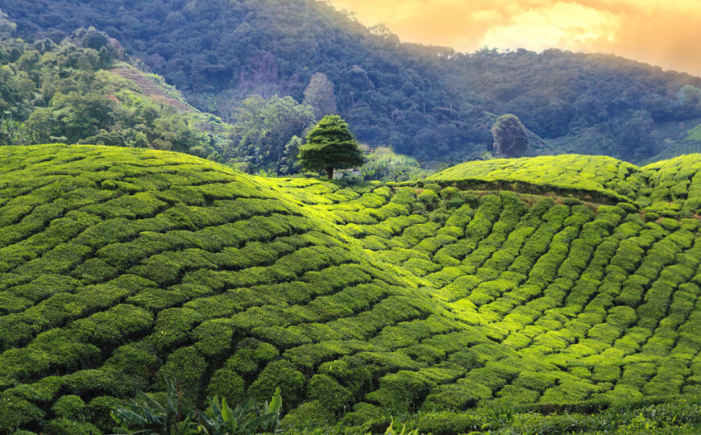

My Travel Diary 
Excited to explore the cool 😎 places in my diary!! Hover Over Me 😀
Below are my most favourite places 😀 that I visited.

Taj Mahal is one of the famous historical monuments in India. Located in Agra near the river Yamuna.

The Gateway of India is an arch-monument built in the early twentieth century in the city of Mumbai.

Meenakshi Temple is a historic Hindu temple located on the southern bank of the Vaigai River in the temple city of Madurai, Tamil Nadu.

Darjeeling is a city in the Indian state of West Bengal. It is located in the Lesser Himalayas at an elevation of 2,000 metres (6,700 ft).